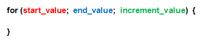
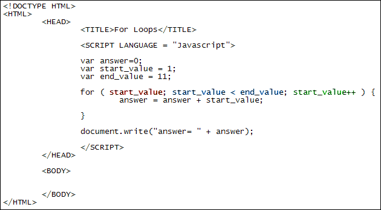
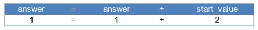
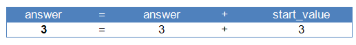
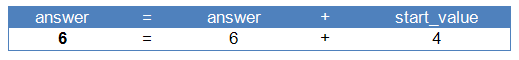
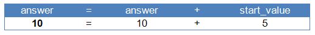
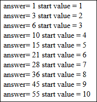

Javascript Programming Loops
One programming tool common to all languages is the loop. Normally, a programme is executed from top to bottom, with each line of code getting processed in turn. If you want to go back up and not down, you can use a loop. Loops are a great way to execute lines of code again and again. There are many reasons why you want to do this. But take the following sum as an example:
var total;
total = 1 + 2 + 3 + 4 + 5 + 6 + 7 + 8 + 9 + 10;
The code above just adds up the numbers 1 to 10. Which is fine if you only have 10 numbers. But supposed you have a 100 numbers, or 1000. You can't really type them all out. With a loop, though, you can add up a 1000, 10000 numbers, in just a few lines of code. The most common type a loop is called a for loop.
For Loops
For loops (lowercase "f") are structured like this:

So you start with the word for. After a space you have a pair of round brackets. In between the round brackets you need three things, separated by semicolons: a start value for your loop, some way for the loop to end, and a way to get from one to the other, which is known as the increment value. Next come a pair of curly brackets. The code you want to execute repeatedly goes between the curly brackets. Here's a for loop that adds up the numbers 1 to 10. Try it out by creating a web page from the template in a previous section.

The first thing to notice here is that we're setting up variables to hold the start value of the loop and the end value. Loops are designed to go round and around a set number of times. You have to tell Javascript how many times you want to go round. So you need a starting value, and an end value. There are many ways to set an end value, but here we're saying, "Keep going round in a loop until the start value is no longer less than the end value." But how does the loop know that the start value is less than the end value? It knows because we've set an increment value. It's this:
start_value++
This is a shorthand way of saying "add 1 to the start_value variable". It's called incrementing a variable. The longhand way to increment a variable is this:
start_value = start_value + 1
If you do the calculation on the right hand side of the equal sign first, the line above will make more sense. Javascript will look at what's currently in the start_value variable, and then add 1 to it. Once it's done that it will place the result into the variable on the left of the equal sign, erasing its contents and thus setting a new value. The result is that the start_value variable keeps increasing by 1 each time round the loop.
You can also take 1 away from numbers with this:
start_value--
Two minus signs after a variable are called the decrement operator. They deduct 1 from whatever is in the variable. It is the same as saying this:
start_value = start_value - 1
To recap, the start value of the loop is whatever number we have put in the start_value variable; the end condition is when the start_value is no longer less than whatever value we have put in the end_value variable; and the way we get from one to the other is by incrementing the start_value variable.
Now have a look at what's in the curly brackets of the loop:
answer = answer + start_value;
This is the whole point of having a loop - to run some code over and over again.
We want to add up the numbers 1 to 10. So, again, do the calculation to the right of the equal sign first. Javascript will look at whatever value is currently held in the answer variable. The first time round the loop this will be zero. (It's zero because we set it that way at the top of the code.) Add 1 to zero to get an answer of 1. This is then stored in the variable to the left of the equal sign. This is the answer variable again. The answer variable will have its contents erased and the new value (1) placed inside of it.
Now, because we're incrementing the start_value variable each time round the loop, its value keeps changing. So the second time round the loop the values will be these:

So we're adding 1 + 2 on the right of the equal sign. The answer ( 3) then gets stored to the left of the equal sign. Which means the third time round the loop the values will be these (remember: do the calculations to the right of the equal sign first, and then store the result to the left):

And the fourth time round the loop the values will be:

The start_value keeps going up by 1 each time round. It's getting towards the correct answer! Have a look at the fifth time round the loop:

The final line of our code just writes out the answer. To get a better idea of what's going on, add this document.write inside of the loop's curly brackets:
answer = answer + start_value;
document.write( "answer= " + answer + " start value = "
+ start_value + "<BR>");
When you run then code you should see the following in the browser:

By then end, then, answer is 55. We've went 10 times round the loop, adding up each time round.
Exercise
Use a for loop to print out the numbers 1 to 20.
Exercise
Use a for loop to print out the odd numbers from 1 to 20. (You'll need Modulus
for this. And an IF Statement.) Your for loop should look like this:
for ( start_value; start_value < end_value; start_value++ ) {
if ( ) {
document.write("answer= " + start_value + "<BR>");
}
}
Obviously, you'll need something between the round brackets of your IF Statement. But what?
Common end values
Another common end value for loops is to get the length of something, the length of a string of text, for example, or the length of an array (you'll learn about arrays in a later section). In the code below, notice how we're using length:
var start_value = 1;
var some_string = "ABCDEFGH";
for ( start_value; start_value < some_string.length; start_value++ ) {
}
The length method is available to all strings and tells you how many characters
a string of text has. We're looping round while the start value is less than
the length of the some_string. As soon as the start value goes above the length
of the string the loop will end.
But we'll explain the end value for loops whenever we meet them, so try not
to worry about them too much.